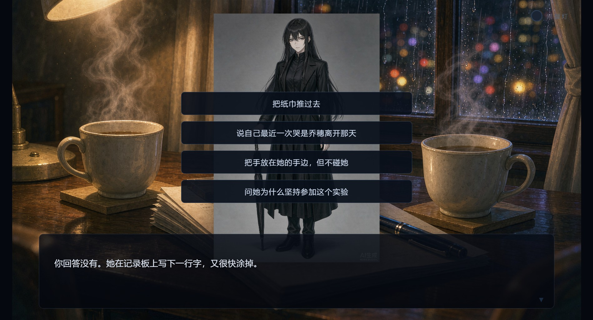
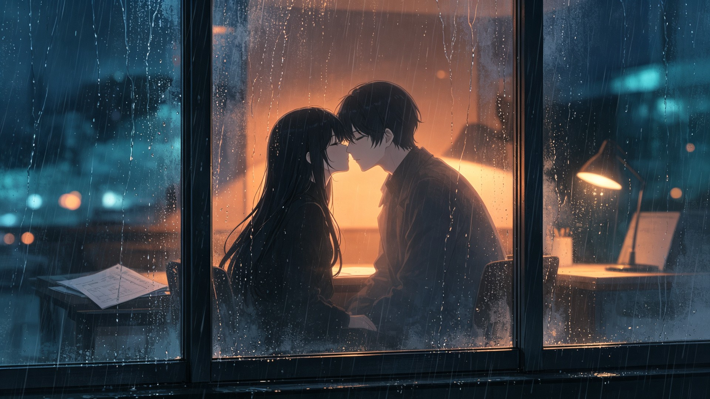
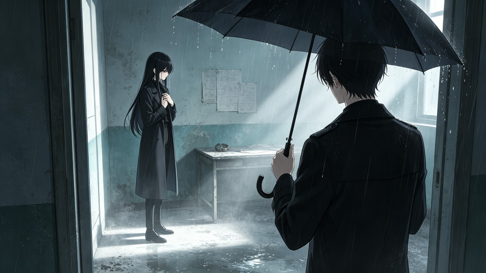
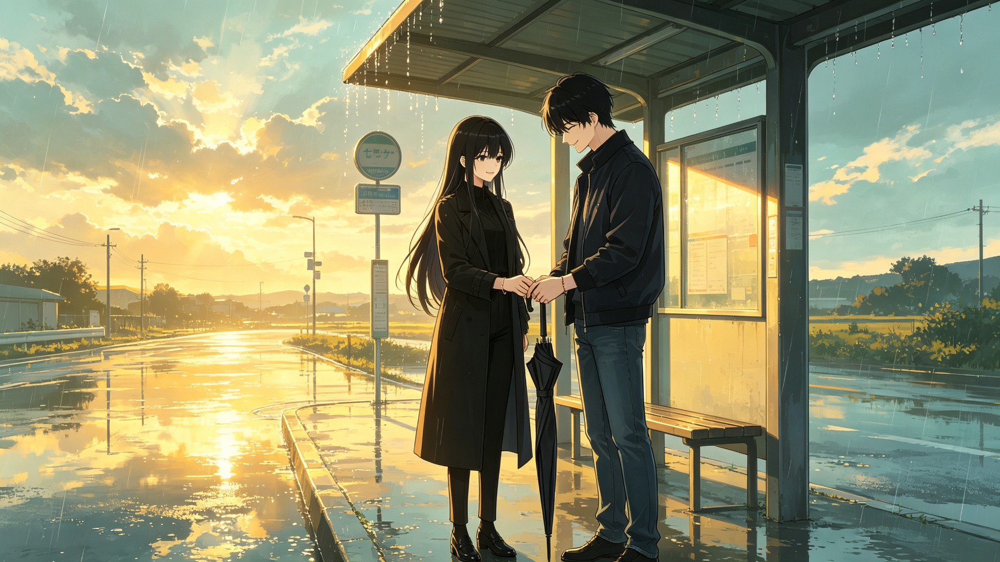

“同频灯亮起之前，不要相信雨会停。”
国产心理悬疑恋爱视觉小说 · 免费发布 · Windows 10 / 11 · 单周目 30 至 60 分钟
一场只有七天的亲密关系实验，一段从雨夜开始的悬疑恋爱。你能在第七夜之前，真正听懂另一个人的心跳吗？
你在一场“亲密关系重建计划”中，与陌生人 S-07 共同生活七天。你们戴着记录心跳的手环，完成关于距离、信任和边界的任务。随着心率曲线逐渐靠近，你发现她进入实验的目的并不简单。
信任、同频、真相、清醒四个隐藏数值共同影响结局。
两个人的心跳越接近，蓝色灯越亮。
同频、雨停、各自成长、失温、008。
亲密不是奖励，而是被认真确认的选择。
三年前那把黑伞，把你们引向同一个雨夜。
立绘差分、剧情 CG、雨夜视频、BGM 与音效。

关系选择
雨窗将吻
答案之后
雨停了就回家“同频灯亮起之前，不要相信雨会停。”
国产心理悬疑恋爱视觉小说 · 免费发布 · Windows 10 / 11 · 单周目 30 至 60 分钟
不是。作品更偏向心理悬疑和关系描写，主要通过信息差、回忆与选择制造压力。
约 30 至 60 分钟。游戏包含五个可达结局，可以在关键选择处继续探索。
这是个人开发者未购买代码签名证书时常见的提示。选择“更多信息”，再点击“仍要运行”即可。